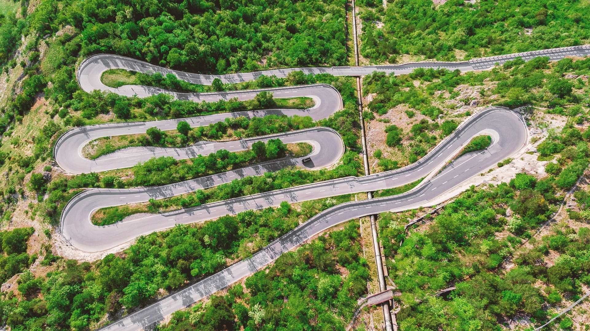

El uso de drones en la publicidad ha generado casos de éxito notables, permitiendo a las empresas transformar su imagen y atraer a una audiencia más amplia. Estos dispositivos, equipados con cámaras de alta calidad, ofrecen nuevas oportunidades creativas que han revolucionado el marketing visual.
Un ejemplo destacado es el de una empresa inmobiliaria que utilizó drones para capturar vistas aéreas de sus propiedades. Las tomas dinámicas y panorámicas no solo mostraron la belleza y el entorno de las viviendas, sino que también destacaron características únicas que no serían visibles desde el suelo. Esto resultó en un aumento significativo del interés y las ventas.
Otra historia de éxito es la de una marca de turismo que empleó drones para filmar spots publicitarios en destinos exóticos. Las impresionantes vistas aéreas de playas, montañas y ciudades capturadas por los drones crearon anuncios visualmente impactantes que atrajeron a viajeros de todo el mundo, incrementando las reservas y visitas.
El sector de los eventos también ha aprovechado esta tecnología. Una empresa organizadora de conciertos utilizó drones para filmar eventos en vivo desde el aire, proporcionando una perspectiva única y emocionante de los espectáculos. Los videos resultantes se compartieron ampliamente en redes sociales, aumentando la visibilidad y el prestigio de la marca.
Además de mejorar la calidad visual, los drones han permitido a las empresas reducir costos de producción. En lugar de alquilar costosos equipos y contratar personal especializado, los drones ofrecen una solución más económica y flexible, haciendo accesible la producción de alta calidad a empresas de todos los tamaños.
Finalmente, el uso de drones en publicidad no solo mejora la imagen de la empresa, sino que también proyecta una sensación de innovación y modernidad. Al adoptar esta tecnología avanzada, las empresas demuestran su compromiso con la vanguardia y capturan el interés de un público más amplio y diverso.
